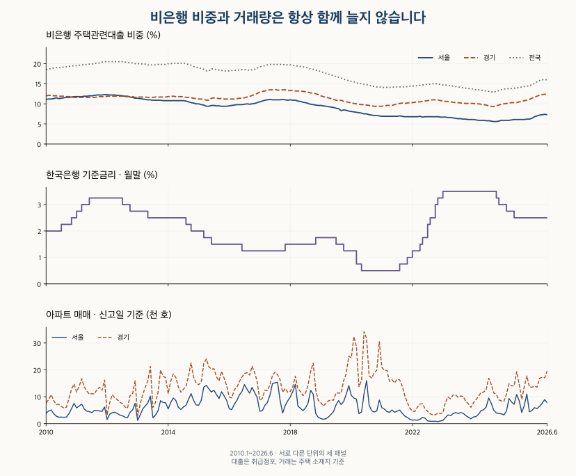

소득과 부담 · 비은행 주택대출
비은행 주택대출 비중, 서울·경기는 언제 커졌을까?
서울·경기 2010~2026년 비은행 주택관련대출 비중과 은행 잔액, 아파트 거래량을 비교합니다. 규제·금리 시기와 취급점포 지역 기준을 확인하고 같은 차주의 이동으로 단정하기 어려운 이유를 정리했습니다.
분석 기간 · 2010.1~2026.6 중심 · 2026.7 잠정 | 자료 기준일 · 공식 자료 확인 2026-10-16
서울·경기의 비은행 주택대출 비중은 최근 다시 높아졌지만, 과거 최고 수준은 아닙니다. 2026년 6월 비은행예금취급기관의 주택관련대출 비중은 서울 7.3%, 경기 12.3%였습니다. 2010년 이후 표시 비중의 고점은 각각 12.3%, 13.6%입니다. 비중이 올랐다는 사실만으로 ‘은행에서 대출받지 못한 사람들이 비은행으로 옮겼다’고 결론 내릴 수는 없습니다.
2017년 5월 서울·경기에서는 비은행 비중과 은행 대출 잔액이 모두 전년 동월보다 늘었지만, 신고일 기준 아파트 매매 호수는 줄었습니다. 한 지표의 증가를 다른 지표의 증가나 같은 사람의 이동으로 읽기 전에 어떤 금융기관·대출·지역·날짜를 셌는지 확인해야 합니다.
‘비은행 주택대출 비중’은 무엇을 나눈 값인가요?
이 글의 비중은 비은행예금취급기관 주택관련대출 잔액÷(예금은행+비은행예금취급기관 주택관련대출 잔액)×100입니다. 매월 말 남아 있는 잔액이며, 그달 새로 빌린 금액이나 대출받은 사람 수가 아닙니다. 아파트 매수에 쓴 대출만 골라낸 통계도 아닙니다.
한국은행은 2026년 1분기 가계신용 설명에서 기존 용도별 ‘주택담보대출’을 ‘주택관련대출’로 명칭 변경했다고 안내했습니다. 이 글은 한국은행 경제통계시스템(ECOS)의 같은 통계를 이어 쓰되 이름은 현재 명칭을 따릅니다. 통화신용정책보고서의 정의처럼 전세자금·이주비·중도금 등 담보대출로 취급되지 않은 대출도 포함하므로, 순수한 주택담보대출로 읽으면 안 됩니다.
예금은행에는 일반은행뿐 아니라 특수은행·외국은행 국내지점 등이 포함됩니다. 비은행예금취급기관은 상호저축은행·상호금융·신용협동조합·새마을금고 등과 해당 통계에 포함된 기타 기관을 묶습니다. 보험사·여신전문금융회사 등을 포괄하는 ‘제2금융권 전체’와 같지 않습니다. 두 계열의 합도 판매신용 등을 포함한 가계신용 전체가 아닙니다.
| 지역 | 월 | 은행 | 비은행 | 비은행 비중 |
|---|---|---|---|---|
| 서울 | 2026-06 | 277,936.8 | 21,907.0 | 7.3% |
| 서울 | 2026-07 잠정 | 279,292.7 | 21,841.6 | 7.3% |
| 경기 | 2026-06 | 208,130.5 | 29,305.0 | 12.3% |
| 경기 | 2026-07 잠정 | 209,290.1 | 29,251.1 | 12.3% |
| 전국 | 2026-06 | 778,185.6 | 148,165.3 | 16.0% |
| 전국 | 2026-07 잠정 | 781,727.6 | 148,118.7 | 15.9% |
표의 잔액 단위는 십억원입니다. 예를 들어 서울의 2026년 6월 비은행 잔액 21,907.0십억 원은 21.907조 원입니다. 비중은 소수 첫째 자리로 반올림했습니다. 최신 관측인 7월은 잠정값으로 따로 표시하고, 본문 비교는 6월까지를 중심으로 합니다. 6월 수치 역시 앞으로 개정될 수 있습니다.
서울·경기의 비중은 언제 크게 올랐나요?
서울의 최고 표시 비중은 2011년 12월·2012년 1월의 12.3%, 경기는 2017년 7월의 13.6%였습니다. 2026년 6월은 두 지역 모두 이보다 낮습니다. 전국의 고점과 서울·경기의 고점도 같지 않습니다. 최근 증가 속도가 빠르다는 설명과 장기 비중이 가장 높다는 설명을 구분해야 합니다.

전년 동월 대비 표시 비중의 최대 상승은 서울 +1.3%포인트, 경기 +2.1%포인트입니다. 서울은 2017년 5월과 2026년 3~5월이 같은 값이고, 경기는 2017년 4~7월과 2026년 5월이 같습니다. 상승 구간만 고르지 않도록 최대 하락 시기와 모든 동률도 아래에 제시했습니다.
| 지역 | 최고 비중 / 월 | 최대 상승 / 월 | 최대 하락 / 월 |
|---|---|---|---|
| 서울 | 12.3% / 2011-12, 2012-01 | +1.3%포인트 / 2017-05, 2026-03, 2026-04, 2026-05 | -1.6%포인트 / 2019-09, 2020-06 |
| 경기 | 13.6% / 2017-07 | +2.1%포인트 / 2017-04, 2017-05, 2017-06, 2017-07, 2026-05 | -2.1%포인트 / 2019-07, 2019-08, 2019-10 |
| 전국 | 20.5% / 2011-12, 2012-01, 2012-02, 2012-03, 2012-04, 2012-05, 2012-06, 2012-07 | +2.2%포인트 / 2026-04 | -2.5%포인트 / 2019-11, 2019-12 |
변화는 표시된 두 비중끼리 뺀 값입니다. 반올림 전 비중의 차이를 나중에 반올림한 값과 0.1%포인트 다를 수 있습니다. 표에서 같은 값인 달을 정밀한 원자료 순위로 다시 나누지 않았습니다.
서울 전체 월별 비중·잔액·금리·매매량 보기
| 월 | 은행 | 비은행 | 비은행 비중 | 기준금리 | 매매 호수 |
|---|---|---|---|---|---|
| 2010-01 | 105,038.1 | 13,177.2 | 11.1% | 2.0 | 3,870 |
| 2010-02 | 105,176.7 | 13,304.7 | 11.2% | 2.0 | 4,719 |
| 2010-03 | 105,835.4 | 13,387.4 | 11.2% | 2.0 | 5,075 |
| 2010-04 | 106,304.1 | 13,560.2 | 11.3% | 2.0 | 3,695 |
| 2010-05 | 106,695.0 | 13,798.6 | 11.5% | 2.0 | 2,811 |
| 2010-06 | 107,409.5 | 13,721.0 | 11.3% | 2.0 | 2,394 |
| 2010-07 | 108,233.7 | 13,879.8 | 11.4% | 2.25 | 2,437 |
| 2010-08 | 107,744.0 | 14,068.6 | 11.5% | 2.25 | 2,358 |
| 2010-09 | 108,041.2 | 14,124.2 | 11.6% | 2.25 | 2,455 |
| 2010-10 | 108,553.2 | 14,300.0 | 11.6% | 2.25 | 3,691 |
| 2010-11 | 109,078.3 | 14,429.8 | 11.7% | 2.5 | 5,632 |
| 2010-12 | 109,489.9 | 14,617.4 | 11.8% | 2.5 | 7,535 |
| 2011-01 | 110,023.5 | 14,686.8 | 11.8% | 2.75 | 5,868 |
| 2011-02 | 110,519.4 | 14,760.8 | 11.8% | 2.75 | 6,523 |
| 2011-03 | 111,300.8 | 14,915.2 | 11.8% | 3.0 | 7,279 |
| 2011-04 | 111,772.6 | 15,050.1 | 11.9% | 3.0 | 5,460 |
| 2011-05 | 111,618.7 | 15,069.1 | 11.9% | 3.0 | 4,654 |
| 2011-06 | 111,827.7 | 15,190.3 | 12.0% | 3.25 | 4,467 |
| 2011-07 | 112,259.3 | 15,277.5 | 12.0% | 3.25 | 4,096 |
| 2011-08 | 112,255.8 | 15,395.8 | 12.1% | 3.25 | 4,931 |
| 2011-09 | 112,454.4 | 15,590.6 | 12.2% | 3.25 | 4,868 |
| 2011-10 | 112,836.4 | 15,661.2 | 12.2% | 3.25 | 4,701 |
| 2011-11 | 113,238.7 | 15,762.5 | 12.2% | 3.25 | 4,568 |
| 2011-12 | 113,511.0 | 15,878.5 | 12.3% | 3.25 | 6,207 |
| 2012-01 | 112,948.5 | 15,831.5 | 12.3% | 3.25 | 1,536 |
| 2012-02 | 112,935.5 | 15,750.2 | 12.2% | 3.25 | 3,512 |
| 2012-03 | 113,018.8 | 15,715.3 | 12.2% | 3.25 | 4,087 |
| 2012-04 | 113,063.5 | 15,664.4 | 12.2% | 3.25 | 4,214 |
| 2012-05 | 112,938.1 | 15,573.3 | 12.1% | 3.25 | 3,785 |
| 2012-06 | 113,052.8 | 15,525.7 | 12.1% | 3.25 | 3,187 |
| 2012-07 | 112,853.3 | 15,346.1 | 12.0% | 3.0 | 2,952 |
| 2012-08 | 112,446.3 | 15,252.8 | 11.9% | 3.0 | 2,398 |
| 2012-09 | 111,954.2 | 15,056.1 | 11.9% | 3.0 | 2,227 |
| 2012-10 | 111,746.0 | 14,834.8 | 11.7% | 2.75 | 4,239 |
| 2012-11 | 111,475.8 | 14,620.7 | 11.6% | 2.75 | 5,069 |
| 2012-12 | 112,091.6 | 14,478.2 | 11.4% | 2.75 | 7,565 |
| 2013-01 | 111,540.9 | 14,342.9 | 11.4% | 2.75 | 1,213 |
| 2013-02 | 111,162.4 | 14,176.2 | 11.3% | 2.75 | 3,189 |
| 2013-03 | 111,101.6 | 13,976.9 | 11.2% | 2.75 | 5,466 |
| 2013-04 | 110,800.5 | 13,877.7 | 11.1% | 2.75 | 6,603 |
| 2013-05 | 111,249.2 | 13,807.7 | 11.0% | 2.5 | 7,677 |
| 2013-06 | 111,704.0 | 13,796.5 | 11.0% | 2.5 | 10,237 |
| 2013-07 | 111,735.9 | 13,702.0 | 10.9% | 2.5 | 2,201 |
| 2013-08 | 111,957.5 | 13,710.1 | 10.9% | 2.5 | 3,179 |
| 2013-09 | 111,812.5 | 13,744.0 | 10.9% | 2.5 | 4,774 |
| 2013-10 | 112,367.0 | 13,713.9 | 10.9% | 2.5 | 8,537 |
| 2013-11 | 112,716.3 | 13,692.1 | 10.8% | 2.5 | 7,868 |
| 2013-12 | 113,314.0 | 13,721.3 | 10.8% | 2.5 | 7,758 |
| 2014-01 | 113,198.6 | 13,751.3 | 10.8% | 2.5 | 5,493 |
| 2014-02 | 113,939.6 | 13,788.6 | 10.8% | 2.5 | 7,864 |
| 2014-03 | 114,563.7 | 13,874.5 | 10.8% | 2.5 | 9,522 |
| 2014-04 | 114,504.5 | 13,895.5 | 10.8% | 2.5 | 8,639 |
| 2014-05 | 114,945.8 | 13,957.4 | 10.8% | 2.5 | 6,079 |
| 2014-06 | 115,767.6 | 14,016.5 | 10.8% | 2.5 | 5,259 |
| 2014-07 | 116,795.1 | 14,126.3 | 10.8% | 2.5 | 6,235 |
| 2014-08 | 117,790.7 | 14,078.9 | 10.7% | 2.25 | 6,806 |
| 2014-09 | 119,122.2 | 14,025.6 | 10.5% | 2.25 | 9,052 |
| 2014-10 | 121,037.3 | 13,932.8 | 10.3% | 2.0 | 11,161 |
| 2014-11 | 122,517.3 | 13,856.4 | 10.2% | 2.0 | 8,630 |
| 2014-12 | 123,839.5 | 13,789.6 | 10.0% | 2.0 | 6,956 |
| 2015-01 | 124,316.3 | 13,736.6 | 10.0% | 2.0 | 6,860 |
| 2015-02 | 125,547.0 | 13,681.2 | 9.8% | 2.0 | 8,682 |
| 2015-03 | 127,371.7 | 13,689.2 | 9.7% | 1.75 | 13,602 |
| 2015-04 | 130,256.1 | 13,550.1 | 9.4% | 1.75 | 14,234 |
| 2015-05 | 130,403.8 | 13,525.0 | 9.4% | 1.75 | 12,903 |
| 2015-06 | 126,913.5 | 13,518.7 | 9.6% | 1.5 | 11,762 |
| 2015-07 | 127,804.2 | 13,583.1 | 9.6% | 1.5 | 12,414 |
| 2015-08 | 129,722.9 | 13,630.2 | 9.5% | 1.5 | 10,799 |
| 2015-09 | 131,438.7 | 13,718.9 | 9.5% | 1.5 | 9,357 |
| 2015-10 | 133,698.7 | 13,869.6 | 9.4% | 1.5 | 11,852 |
| 2015-11 | 135,043.0 | 14,042.7 | 9.4% | 1.5 | 10,334 |
| 2015-12 | 136,921.7 | 14,235.9 | 9.4% | 1.5 | 8,614 |
| 2016-01 | 137,481.7 | 14,415.9 | 9.5% | 1.5 | 5,549 |
| 2016-02 | 137,498.4 | 14,581.7 | 9.6% | 1.5 | 5,193 |
| 2016-03 | 138,328.7 | 14,831.5 | 9.7% | 1.5 | 7,231 |
| 2016-04 | 139,269.0 | 15,122.2 | 9.8% | 1.5 | 8,629 |
| 2016-05 | 140,815.3 | 15,260.8 | 9.8% | 1.5 | 10,710 |
| 2016-06 | 142,442.5 | 15,558.7 | 9.8% | 1.25 | 11,974 |
| 2016-07 | 143,787.5 | 15,837.3 | 9.9% | 1.25 | 14,545 |
| 2016-08 | 145,726.2 | 16,104.5 | 10.0% | 1.25 | 12,784 |
| 2016-09 | 147,081.0 | 16,119.1 | 9.9% | 1.25 | 11,342 |
| 2016-10 | 148,459.6 | 16,456.5 | 10.0% | 1.25 | 13,467 |
| 2016-11 | 150,289.6 | 16,882.1 | 10.1% | 1.25 | 11,528 |
| 2016-12 | 150,524.8 | 17,351.0 | 10.3% | 1.25 | 9,654 |
| 2017-01 | 150,057.6 | 17,641.1 | 10.5% | 1.25 | 4,627 |
| 2017-02 | 149,951.1 | 17,900.8 | 10.7% | 1.25 | 4,760 |
| 2017-03 | 150,077.9 | 18,299.4 | 10.9% | 1.25 | 6,802 |
| 2017-04 | 150,448.7 | 18,587.4 | 11.0% | 1.25 | 7,858 |
| 2017-05 | 151,060.9 | 18,777.5 | 11.1% | 1.25 | 10,586 |
| 2017-06 | 152,162.7 | 18,881.8 | 11.0% | 1.25 | 14,918 |
| 2017-07 | 153,613.1 | 18,957.3 | 11.0% | 1.25 | 15,168 |
| 2017-08 | 155,351.2 | 19,256.0 | 11.0% | 1.25 | 15,421 |
| 2017-09 | 155,535.3 | 19,293.4 | 11.0% | 1.25 | 8,652 |
| 2017-10 | 156,014.4 | 19,413.5 | 11.1% | 1.25 | 3,942 |
| 2017-11 | 156,963.3 | 19,388.2 | 11.0% | 1.5 | 6,679 |
| 2017-12 | 157,613.3 | 19,377.7 | 10.9% | 1.5 | 8,484 |
| 2018-01 | 157,860.7 | 19,420.0 | 11.0% | 1.5 | 9,938 |
| 2018-02 | 157,826.9 | 19,326.6 | 10.9% | 1.5 | 11,986 |
| 2018-03 | 158,308.0 | 19,321.4 | 10.9% | 1.5 | 14,609 |
| 2018-04 | 158,951.7 | 19,133.5 | 10.7% | 1.5 | 6,535 |
| 2018-05 | 159,842.5 | 18,930.1 | 10.6% | 1.5 | 5,697 |
| 2018-06 | 160,289.3 | 18,682.7 | 10.4% | 1.5 | 4,830 |
| 2018-07 | 160,847.2 | 18,444.3 | 10.3% | 1.5 | 5,852 |
| 2018-08 | 161,771.3 | 18,226.1 | 10.1% | 1.5 | 7,687 |
| 2018-09 | 163,264.1 | 18,005.4 | 9.9% | 1.5 | 12,395 |
| 2018-10 | 164,124.3 | 17,834.4 | 9.8% | 1.5 | 10,977 |
| 2018-11 | 165,656.4 | 17,760.5 | 9.7% | 1.75 | 3,736 |
| 2018-12 | 166,251.4 | 17,631.2 | 9.6% | 1.75 | 2,380 |
| 2019-01 | 166,048.0 | 17,557.2 | 9.6% | 1.75 | 1,889 |
| 2019-02 | 166,523.5 | 17,480.7 | 9.5% | 1.75 | 1,624 |
| 2019-03 | 167,189.5 | 17,340.0 | 9.4% | 1.75 | 1,813 |
| 2019-04 | 168,348.7 | 17,269.0 | 9.3% | 1.75 | 2,469 |
| 2019-05 | 169,248.5 | 17,148.9 | 9.2% | 1.75 | 3,432 |
| 2019-06 | 170,019.9 | 16,982.2 | 9.1% | 1.75 | 4,470 |
| 2019-07 | 171,237.7 | 16,800.0 | 8.9% | 1.5 | 7,009 |
| 2019-08 | 173,020.1 | 16,627.7 | 8.8% | 1.5 | 8,586 |
| 2019-09 | 174,397.0 | 15,747.9 | 8.3% | 1.5 | 7,096 |
| 2019-10 | 176,025.6 | 16,254.7 | 8.5% | 1.25 | 8,274 |
| 2019-11 | 177,219.5 | 16,158.0 | 8.4% | 1.25 | 10,955 |
| 2019-12 | 178,277.8 | 15,976.1 | 8.2% | 1.25 | 14,117 |
| 2020-01 | 179,412.9 | 15,829.7 | 8.1% | 1.25 | 10,491 |
| 2020-02 | 180,957.0 | 15,749.8 | 8.0% | 1.25 | 9,522 |
| 2020-03 | 182,729.9 | 15,592.3 | 7.9% | 0.75 | 9,152 |
| 2020-04 | 184,514.3 | 15,539.2 | 7.8% | 0.75 | 3,699 |
| 2020-05 | 185,898.0 | 15,450.9 | 7.7% | 0.5 | 4,328 |
| 2020-06 | 187,310.7 | 15,286.5 | 7.5% | 0.5 | 11,106 |
| 2020-07 | 188,450.9 | 15,173.2 | 7.5% | 0.5 | 16,002 |
| 2020-08 | 190,483.9 | 15,084.4 | 7.3% | 0.5 | 6,880 |
| 2020-09 | 193,141.5 | 15,023.9 | 7.2% | 0.5 | 4,795 |
| 2020-10 | 195,840.5 | 15,031.6 | 7.1% | 0.5 | 4,320 |
| 2020-11 | 197,539.2 | 15,017.6 | 7.1% | 0.5 | 4,725 |
| 2020-12 | 199,946.5 | 14,945.4 | 7.0% | 0.5 | 8,764 |
| 2021-01 | 202,250.9 | 14,973.0 | 6.9% | 0.5 | 5,945 |
| 2021-02 | 204,918.2 | 15,163.4 | 6.9% | 0.5 | 5,435 |
| 2021-03 | 207,094.9 | 15,355.6 | 6.9% | 0.5 | 4,495 |
| 2021-04 | 208,558.5 | 15,491.2 | 6.9% | 0.5 | 4,194 |
| 2021-05 | 209,714.0 | 15,538.1 | 6.9% | 0.5 | 5,090 |
| 2021-06 | 210,938.1 | 15,695.6 | 6.9% | 0.5 | 4,240 |
| 2021-07 | 213,363.8 | 15,918.4 | 6.9% | 0.5 | 4,646 |
| 2021-08 | 215,644.9 | 16,181.1 | 7.0% | 0.75 | 5,054 |
| 2021-09 | 217,863.0 | 16,179.1 | 6.9% | 0.75 | 3,874 |
| 2021-10 | 220,109.0 | 16,085.0 | 6.8% | 0.75 | 2,839 |
| 2021-11 | 222,100.6 | 16,152.7 | 6.8% | 1.0 | 2,305 |
| 2021-12 | 223,481.8 | 16,250.3 | 6.8% | 1.0 | 1,634 |
| 2022-01 | 223,468.2 | 16,385.5 | 6.8% | 1.25 | 1,281 |
| 2022-02 | 225,938.7 | 16,406.9 | 6.8% | 1.25 | 1,404 |
| 2022-03 | 226,502.9 | 16,396.9 | 6.8% | 1.25 | 1,236 |
| 2022-04 | 227,492.2 | 16,832.2 | 6.9% | 1.5 | 1,624 |
| 2022-05 | 227,670.1 | 16,442.8 | 6.7% | 1.75 | 2,372 |
| 2022-06 | 228,272.2 | 16,541.0 | 6.8% | 1.75 | 2,014 |
| 2022-07 | 228,416.8 | 16,553.1 | 6.8% | 2.25 | 1,028 |
| 2022-08 | 228,557.0 | 16,630.4 | 6.8% | 2.5 | 907 |
| 2022-09 | 228,770.2 | 16,693.4 | 6.8% | 2.5 | 856 |
| 2022-10 | 228,659.4 | 16,664.0 | 6.8% | 3.0 | 900 |
| 2022-11 | 228,344.6 | 16,565.6 | 6.8% | 3.25 | 761 |
| 2022-12 | 228,104.3 | 16,451.3 | 6.7% | 3.25 | 1,001 |
| 2023-01 | 226,852.0 | 16,333.6 | 6.7% | 3.5 | 1,161 |
| 2023-02 | 226,105.0 | 16,272.7 | 6.7% | 3.5 | 2,286 |
| 2023-03 | 225,236.1 | 16,043.2 | 6.6% | 3.5 | 3,234 |
| 2023-04 | 225,609.0 | 15,865.1 | 6.6% | 3.5 | 2,981 |
| 2023-05 | 226,427.5 | 15,761.8 | 6.5% | 3.5 | 3,711 |
| 2023-06 | 228,295.5 | 15,650.5 | 6.4% | 3.5 | 4,136 |
| 2023-07 | 229,566.0 | 15,544.5 | 6.3% | 3.5 | 3,804 |
| 2023-08 | 231,503.4 | 15,506.1 | 6.3% | 3.5 | 4,091 |
| 2023-09 | 232,742.9 | 15,491.5 | 6.2% | 3.5 | 3,845 |
| 2023-10 | 233,990.8 | 15,457.3 | 6.2% | 3.5 | 2,983 |
| 2023-11 | 236,066.6 | 15,423.5 | 6.1% | 3.5 | 2,417 |
| 2023-12 | 237,253.5 | 15,471.1 | 6.1% | 3.5 | 1,790 |
| 2024-01 | 239,282.1 | 15,519.3 | 6.1% | 3.5 | 2,456 |
| 2024-02 | 241,996.5 | 15,412.3 | 6.0% | 3.5 | 2,665 |
| 2024-03 | 242,158.3 | 15,239.4 | 5.9% | 3.5 | 3,482 |
| 2024-04 | 243,675.9 | 15,354.6 | 5.9% | 3.5 | 4,840 |
| 2024-05 | 246,006.9 | 15,330.0 | 5.9% | 3.5 | 5,182 |
| 2024-06 | 248,613.8 | 15,243.8 | 5.8% | 3.5 | 6,150 |
| 2024-07 | 250,580.7 | 15,332.0 | 5.8% | 3.5 | 9,518 |
| 2024-08 | 254,193.4 | 15,282.8 | 5.7% | 3.5 | 7,609 |
| 2024-09 | 256,690.5 | 15,202.3 | 5.6% | 3.5 | 4,951 |
| 2024-10 | 258,111.1 | 15,355.5 | 5.6% | 3.25 | 4,000 |
| 2024-11 | 259,026.9 | 15,756.8 | 5.7% | 3.0 | 3,773 |
| 2024-12 | 259,442.9 | 16,212.5 | 5.9% | 3.0 | 3,656 |
| 2025-01 | 259,876.5 | 16,394.3 | 5.9% | 3.0 | 3,233 |
| 2025-02 | 261,701.2 | 16,472.9 | 5.9% | 2.75 | 4,743 |
| 2025-03 | 262,696.7 | 16,594.1 | 5.9% | 2.75 | 9,349 |
| 2025-04 | 264,308.3 | 16,917.6 | 6.0% | 2.75 | 8,029 |
| 2025-05 | 266,067.1 | 17,209.3 | 6.1% | 2.5 | 7,221 |
| 2025-06 | 268,966.4 | 17,557.9 | 6.1% | 2.5 | 10,814 |
| 2025-07 | 271,293.0 | 17,538.0 | 6.1% | 2.5 | 8,485 |
| 2025-08 | 273,554.5 | 17,833.2 | 6.1% | 2.5 | 4,154 |
| 2025-09 | 275,095.4 | 17,995.8 | 6.1% | 2.5 | 6,796 |
| 2025-10 | 275,835.7 | 18,108.1 | 6.2% | 2.5 | 11,041 |
| 2025-11 | 275,824.7 | 18,367.6 | 6.2% | 2.5 | 4,395 |
| 2025-12 | 275,580.9 | 18,950.0 | 6.4% | 2.5 | 4,871 |
| 2026-01 | 275,252.3 | 19,990.5 | 6.8% | 2.5 | 5,945 |
| 2026-02 | 275,698.5 | 20,880.5 | 7.0% | 2.5 | 5,599 |
| 2026-03 | 275,495.0 | 21,490.1 | 7.2% | 2.5 | 6,433 |
| 2026-04 | 276,616.8 | 21,924.4 | 7.3% | 2.5 | 7,521 |
| 2026-05 | 277,217.6 | 21,993.7 | 7.4% | 2.5 | 8,946 |
| 2026-06 | 277,936.8 | 21,907.0 | 7.3% | 2.5 | 7,742 |
| 2026-07 잠정 | 279,292.7 | 21,841.6 | 7.3% | 2.75 | 6,564 |
경기 전체 월별 비중·잔액·금리·매매량 보기
| 월 | 은행 | 비은행 | 비은행 비중 | 기준금리 | 매매 호수 |
|---|---|---|---|---|---|
| 2010-01 | 85,519.3 | 11,644.5 | 12.0% | 2.0 | 7,723 |
| 2010-02 | 85,422.0 | 11,736.3 | 12.1% | 2.0 | 8,912 |
| 2010-03 | 85,807.6 | 11,803.6 | 12.1% | 2.0 | 10,757 |
| 2010-04 | 86,425.0 | 11,785.1 | 12.0% | 2.0 | 8,596 |
| 2010-05 | 86,852.3 | 11,863.5 | 12.0% | 2.0 | 7,126 |
| 2010-06 | 87,770.1 | 11,890.3 | 11.9% | 2.0 | 7,151 |
| 2010-07 | 88,248.8 | 11,876.2 | 11.9% | 2.25 | 6,375 |
| 2010-08 | 88,185.4 | 11,878.2 | 11.9% | 2.25 | 5,798 |
| 2010-09 | 88,611.1 | 11,890.1 | 11.8% | 2.25 | 6,112 |
| 2010-10 | 89,163.1 | 11,927.0 | 11.8% | 2.25 | 9,393 |
| 2010-11 | 90,125.1 | 11,923.6 | 11.7% | 2.5 | 12,839 |
| 2010-12 | 91,020.6 | 11,994.8 | 11.6% | 2.5 | 14,755 |
| 2011-01 | 91,410.2 | 11,979.5 | 11.6% | 2.75 | 11,760 |
| 2011-02 | 91,644.3 | 12,005.1 | 11.6% | 2.75 | 13,895 |
| 2011-03 | 91,925.3 | 12,038.7 | 11.6% | 3.0 | 16,719 |
| 2011-04 | 92,525.0 | 12,094.5 | 11.6% | 3.0 | 13,595 |
| 2011-05 | 92,934.8 | 12,173.4 | 11.6% | 3.0 | 12,159 |
| 2011-06 | 93,319.8 | 12,236.0 | 11.6% | 3.25 | 11,001 |
| 2011-07 | 93,741.6 | 12,303.4 | 11.6% | 3.25 | 11,154 |
| 2011-08 | 94,012.5 | 12,390.7 | 11.6% | 3.25 | 11,009 |
| 2011-09 | 94,330.0 | 12,523.1 | 11.7% | 3.25 | 12,681 |
| 2011-10 | 94,709.3 | 12,625.0 | 11.8% | 3.25 | 13,549 |
| 2011-11 | 94,770.8 | 12,650.5 | 11.8% | 3.25 | 12,405 |
| 2011-12 | 95,453.7 | 12,779.2 | 11.8% | 3.25 | 16,207 |
| 2012-01 | 95,158.6 | 12,809.2 | 11.9% | 3.25 | 3,300 |
| 2012-02 | 95,285.7 | 12,813.6 | 11.9% | 3.25 | 7,769 |
| 2012-03 | 95,347.1 | 12,857.3 | 11.9% | 3.25 | 10,739 |
| 2012-04 | 95,449.4 | 12,881.7 | 11.9% | 3.25 | 9,639 |
| 2012-05 | 95,756.9 | 12,924.6 | 11.9% | 3.25 | 8,896 |
| 2012-06 | 95,737.3 | 12,929.1 | 11.9% | 3.25 | 7,961 |
| 2012-07 | 95,889.1 | 12,918.5 | 11.9% | 3.0 | 7,443 |
| 2012-08 | 95,801.0 | 12,843.0 | 11.8% | 3.0 | 6,215 |
| 2012-09 | 95,606.3 | 12,797.0 | 11.8% | 3.0 | 5,711 |
| 2012-10 | 95,508.6 | 12,729.2 | 11.8% | 2.75 | 10,384 |
| 2012-11 | 95,053.3 | 12,716.4 | 11.8% | 2.75 | 11,093 |
| 2012-12 | 96,202.6 | 12,675.8 | 11.6% | 2.75 | 15,936 |
| 2013-01 | 95,218.0 | 12,595.6 | 11.7% | 2.75 | 2,884 |
| 2013-02 | 94,687.6 | 12,558.4 | 11.7% | 2.75 | 7,327 |
| 2013-03 | 94,526.9 | 12,498.6 | 11.7% | 2.75 | 10,819 |
| 2013-04 | 94,142.4 | 12,476.0 | 11.7% | 2.75 | 13,516 |
| 2013-05 | 94,258.5 | 12,410.1 | 11.6% | 2.5 | 15,996 |
| 2013-06 | 95,130.9 | 12,482.4 | 11.6% | 2.5 | 21,280 |
| 2013-07 | 94,912.7 | 12,485.4 | 11.6% | 2.5 | 6,043 |
| 2013-08 | 94,789.1 | 12,538.3 | 11.7% | 2.5 | 7,832 |
| 2013-09 | 94,843.5 | 12,554.0 | 11.7% | 2.5 | 11,579 |
| 2013-10 | 95,138.8 | 12,602.9 | 11.7% | 2.5 | 19,898 |
| 2013-11 | 95,525.5 | 12,679.3 | 11.7% | 2.5 | 17,641 |
| 2013-12 | 96,216.9 | 12,772.2 | 11.7% | 2.5 | 17,080 |
| 2014-01 | 95,821.4 | 12,807.9 | 11.8% | 2.5 | 11,173 |
| 2014-02 | 95,885.6 | 12,921.4 | 11.9% | 2.5 | 15,751 |
| 2014-03 | 96,068.3 | 12,953.5 | 11.9% | 2.5 | 18,490 |
| 2014-04 | 97,659.8 | 13,019.0 | 11.8% | 2.5 | 17,209 |
| 2014-05 | 97,988.3 | 13,073.5 | 11.8% | 2.5 | 13,604 |
| 2014-06 | 98,703.1 | 13,157.7 | 11.8% | 2.5 | 11,709 |
| 2014-07 | 99,169.4 | 13,234.7 | 11.8% | 2.5 | 12,823 |
| 2014-08 | 100,701.7 | 13,261.7 | 11.6% | 2.25 | 13,865 |
| 2014-09 | 101,413.2 | 13,279.7 | 11.6% | 2.25 | 17,676 |
| 2014-10 | 102,738.3 | 13,304.9 | 11.5% | 2.0 | 22,591 |
| 2014-11 | 103,784.2 | 13,322.0 | 11.4% | 2.0 | 17,288 |
| 2014-12 | 104,932.0 | 13,385.7 | 11.3% | 2.0 | 15,109 |
| 2015-01 | 105,272.0 | 13,331.1 | 11.2% | 2.0 | 14,502 |
| 2015-02 | 106,282.8 | 13,346.7 | 11.2% | 2.0 | 15,479 |
| 2015-03 | 106,968.5 | 13,328.8 | 11.1% | 1.75 | 22,386 |
| 2015-04 | 108,882.1 | 13,341.5 | 10.9% | 1.75 | 24,069 |
| 2015-05 | 108,446.5 | 13,269.5 | 10.9% | 1.75 | 21,103 |
| 2015-06 | 103,747.3 | 13,332.3 | 11.4% | 1.5 | 20,273 |
| 2015-07 | 103,209.6 | 13,421.4 | 11.5% | 1.5 | 20,421 |
| 2015-08 | 104,689.8 | 13,488.4 | 11.4% | 1.5 | 17,431 |
| 2015-09 | 106,307.9 | 13,580.0 | 11.3% | 1.5 | 15,882 |
| 2015-10 | 108,180.1 | 13,716.3 | 11.3% | 1.5 | 19,466 |
| 2015-11 | 109,538.9 | 13,847.1 | 11.2% | 1.5 | 16,877 |
| 2015-12 | 111,369.0 | 14,036.2 | 11.2% | 1.5 | 14,117 |
| 2016-01 | 112,075.3 | 14,086.4 | 11.2% | 1.5 | 9,894 |
| 2016-02 | 112,898.0 | 14,191.4 | 11.2% | 1.5 | 9,584 |
| 2016-03 | 113,873.1 | 14,366.5 | 11.2% | 1.5 | 12,628 |
| 2016-04 | 115,003.9 | 14,628.3 | 11.3% | 1.5 | 13,526 |
| 2016-05 | 116,184.4 | 14,919.7 | 11.4% | 1.5 | 15,668 |
| 2016-06 | 117,676.4 | 15,157.3 | 11.4% | 1.25 | 17,372 |
| 2016-07 | 118,842.9 | 15,492.1 | 11.5% | 1.25 | 18,633 |
| 2016-08 | 119,908.7 | 15,890.2 | 11.7% | 1.25 | 18,982 |
| 2016-09 | 120,910.6 | 16,164.7 | 11.8% | 1.25 | 18,055 |
| 2016-10 | 121,814.1 | 16,809.4 | 12.1% | 1.25 | 21,341 |
| 2016-11 | 122,978.6 | 17,318.8 | 12.3% | 1.25 | 19,067 |
| 2016-12 | 123,417.0 | 17,839.3 | 12.6% | 1.25 | 15,574 |
| 2017-01 | 123,166.6 | 18,216.2 | 12.9% | 1.25 | 8,628 |
| 2017-02 | 123,347.9 | 18,632.9 | 13.1% | 1.25 | 9,371 |
| 2017-03 | 124,020.0 | 18,857.4 | 13.2% | 1.25 | 12,433 |
| 2017-04 | 124,716.8 | 19,237.1 | 13.4% | 1.25 | 12,272 |
| 2017-05 | 125,363.7 | 19,635.8 | 13.5% | 1.25 | 14,446 |
| 2017-06 | 126,383.5 | 19,769.1 | 13.5% | 1.25 | 17,977 |
| 2017-07 | 126,684.5 | 19,952.8 | 13.6% | 1.25 | 19,187 |
| 2017-08 | 127,235.3 | 19,752.8 | 13.4% | 1.25 | 18,225 |
| 2017-09 | 129,113.7 | 20,039.6 | 13.4% | 1.25 | 16,232 |
| 2017-10 | 129,743.0 | 20,265.3 | 13.5% | 1.25 | 11,665 |
| 2017-11 | 130,373.6 | 20,295.1 | 13.5% | 1.5 | 13,101 |
| 2017-12 | 131,152.8 | 20,370.2 | 13.4% | 1.5 | 11,663 |
| 2018-01 | 131,529.8 | 20,263.3 | 13.3% | 1.5 | 12,022 |
| 2018-02 | 132,355.4 | 20,249.1 | 13.3% | 1.5 | 13,784 |
| 2018-03 | 133,407.4 | 20,259.2 | 13.2% | 1.5 | 17,661 |
| 2018-04 | 134,069.6 | 20,369.7 | 13.2% | 1.5 | 12,965 |
| 2018-05 | 134,543.6 | 20,447.7 | 13.2% | 1.5 | 11,901 |
| 2018-06 | 135,629.2 | 20,462.0 | 13.1% | 1.5 | 10,417 |
| 2018-07 | 136,567.6 | 20,389.3 | 13.0% | 1.5 | 11,316 |
| 2018-08 | 137,580.1 | 20,299.7 | 12.9% | 1.5 | 14,388 |
| 2018-09 | 138,792.2 | 20,250.4 | 12.7% | 1.5 | 19,443 |
| 2018-10 | 139,595.4 | 20,257.6 | 12.7% | 1.5 | 22,498 |
| 2018-11 | 140,817.8 | 20,149.3 | 12.5% | 1.75 | 12,510 |
| 2018-12 | 142,138.3 | 19,993.8 | 12.3% | 1.75 | 8,631 |
| 2019-01 | 143,266.7 | 19,555.6 | 12.0% | 1.75 | 7,897 |
| 2019-02 | 143,970.3 | 19,289.2 | 11.8% | 1.75 | 6,529 |
| 2019-03 | 145,045.6 | 19,109.6 | 11.6% | 1.75 | 7,541 |
| 2019-04 | 146,131.9 | 18,916.4 | 11.5% | 1.75 | 8,486 |
| 2019-05 | 147,095.4 | 18,738.2 | 11.3% | 1.75 | 8,844 |
| 2019-06 | 148,622.3 | 18,570.9 | 11.1% | 1.75 | 8,721 |
| 2019-07 | 149,839.1 | 18,368.7 | 10.9% | 1.5 | 11,416 |
| 2019-08 | 151,094.2 | 18,237.8 | 10.8% | 1.5 | 11,381 |
| 2019-09 | 152,081.2 | 18,523.9 | 10.9% | 1.5 | 11,427 |
| 2019-10 | 153,504.0 | 18,207.5 | 10.6% | 1.25 | 16,106 |
| 2019-11 | 154,752.7 | 18,182.5 | 10.5% | 1.25 | 18,601 |
| 2019-12 | 155,050.5 | 18,079.5 | 10.4% | 1.25 | 25,095 |
| 2020-01 | 155,418.1 | 17,607.5 | 10.2% | 1.25 | 24,502 |
| 2020-02 | 156,223.6 | 17,615.4 | 10.1% | 1.25 | 32,381 |
| 2020-03 | 158,119.7 | 17,559.3 | 10.0% | 0.75 | 28,665 |
| 2020-04 | 160,046.1 | 17,520.1 | 9.9% | 0.75 | 13,735 |
| 2020-05 | 160,614.1 | 17,479.0 | 9.8% | 0.5 | 16,029 |
| 2020-06 | 161,304.5 | 17,444.6 | 9.8% | 0.5 | 34,199 |
| 2020-07 | 161,765.1 | 17,386.1 | 9.7% | 0.5 | 31,735 |
| 2020-08 | 163,647.8 | 17,318.9 | 9.6% | 0.5 | 17,799 |
| 2020-09 | 164,712.6 | 17,255.5 | 9.5% | 0.5 | 16,956 |
| 2020-10 | 166,215.5 | 17,232.5 | 9.4% | 0.5 | 18,905 |
| 2020-11 | 167,381.3 | 17,300.4 | 9.4% | 0.5 | 19,845 |
| 2020-12 | 168,418.9 | 17,383.3 | 9.4% | 0.5 | 30,495 |
| 2021-01 | 168,524.4 | 17,508.5 | 9.4% | 0.5 | 20,938 |
| 2021-02 | 169,866.6 | 17,883.8 | 9.5% | 0.5 | 19,894 |
| 2021-03 | 170,990.6 | 18,119.7 | 9.6% | 0.5 | 19,832 |
| 2021-04 | 171,102.1 | 18,222.8 | 9.6% | 0.5 | 15,689 |
| 2021-05 | 170,955.6 | 18,212.8 | 9.6% | 0.5 | 16,327 |
| 2021-06 | 171,150.4 | 18,614.7 | 9.8% | 0.5 | 15,131 |
| 2021-07 | 172,009.3 | 19,026.6 | 10.0% | 0.5 | 16,580 |
| 2021-08 | 173,204.9 | 19,499.4 | 10.1% | 0.75 | 16,249 |
| 2021-09 | 174,657.3 | 19,759.4 | 10.2% | 0.75 | 13,997 |
| 2021-10 | 175,673.1 | 19,828.0 | 10.1% | 0.75 | 10,513 |
| 2021-11 | 176,264.9 | 20,020.5 | 10.2% | 1.0 | 7,852 |
| 2021-12 | 176,317.0 | 20,151.1 | 10.3% | 1.0 | 5,791 |
| 2022-01 | 176,682.3 | 20,314.3 | 10.3% | 1.25 | 4,642 |
| 2022-02 | 175,167.6 | 20,398.3 | 10.4% | 1.25 | 4,537 |
| 2022-03 | 175,006.0 | 20,488.0 | 10.5% | 1.25 | 6,190 |
| 2022-04 | 175,112.3 | 20,560.4 | 10.5% | 1.5 | 7,306 |
| 2022-05 | 174,826.7 | 20,700.4 | 10.6% | 1.75 | 7,414 |
| 2022-06 | 175,037.6 | 20,998.6 | 10.7% | 1.75 | 5,460 |
| 2022-07 | 175,075.9 | 21,172.3 | 10.8% | 2.25 | 4,567 |
| 2022-08 | 175,164.9 | 21,392.1 | 10.9% | 2.5 | 3,657 |
| 2022-09 | 175,507.0 | 21,632.1 | 11.0% | 2.5 | 3,285 |
| 2022-10 | 175,604.5 | 21,785.5 | 11.0% | 3.0 | 3,270 |
| 2022-11 | 176,004.4 | 21,788.2 | 11.0% | 3.25 | 3,933 |
| 2022-12 | 177,453.1 | 21,591.4 | 10.8% | 3.25 | 3,698 |
| 2023-01 | 178,076.5 | 21,375.0 | 10.7% | 3.5 | 4,093 |
| 2023-02 | 178,638.8 | 21,258.7 | 10.6% | 3.5 | 7,913 |
| 2023-03 | 177,868.9 | 21,041.5 | 10.6% | 3.5 | 9,903 |
| 2023-04 | 177,445.6 | 20,819.9 | 10.5% | 3.5 | 9,218 |
| 2023-05 | 178,130.6 | 20,744.3 | 10.4% | 3.5 | 10,670 |
| 2023-06 | 179,462.6 | 20,664.1 | 10.3% | 3.5 | 10,633 |
| 2023-07 | 179,962.4 | 20,595.2 | 10.3% | 3.5 | 9,795 |
| 2023-08 | 180,202.1 | 20,552.8 | 10.2% | 3.5 | 10,319 |
| 2023-09 | 180,675.1 | 20,500.0 | 10.2% | 3.5 | 10,076 |
| 2023-10 | 181,253.2 | 20,417.9 | 10.1% | 3.5 | 8,242 |
| 2023-11 | 182,581.1 | 20,523.4 | 10.1% | 3.5 | 7,407 |
| 2023-12 | 183,275.5 | 20,479.3 | 10.1% | 3.5 | 6,081 |
| 2024-01 | 183,912.2 | 20,632.9 | 10.1% | 3.5 | 7,729 |
| 2024-02 | 184,490.8 | 20,544.2 | 10.0% | 3.5 | 8,946 |
| 2024-03 | 184,273.2 | 20,440.8 | 10.0% | 3.5 | 10,104 |
| 2024-04 | 185,553.9 | 20,337.9 | 9.9% | 3.5 | 11,673 |
| 2024-05 | 186,751.9 | 20,313.9 | 9.8% | 3.5 | 11,703 |
| 2024-06 | 188,017.3 | 20,197.0 | 9.7% | 3.5 | 12,683 |
| 2024-07 | 189,811.2 | 19,985.6 | 9.5% | 3.5 | 16,890 |
| 2024-08 | 192,315.3 | 20,000.1 | 9.4% | 3.5 | 14,618 |
| 2024-09 | 194,579.6 | 20,067.4 | 9.3% | 3.5 | 11,393 |
| 2024-10 | 195,201.8 | 20,481.4 | 9.5% | 3.25 | 10,890 |
| 2024-11 | 195,927.4 | 21,139.7 | 9.7% | 3.0 | 8,843 |
| 2024-12 | 196,592.0 | 21,665.9 | 9.9% | 3.0 | 8,415 |
| 2025-01 | 197,693.8 | 21,978.4 | 10.0% | 3.0 | 8,348 |
| 2025-02 | 198,709.1 | 22,397.2 | 10.1% | 2.75 | 10,993 |
| 2025-03 | 200,034.9 | 22,695.0 | 10.2% | 2.75 | 14,870 |
| 2025-04 | 201,369.1 | 23,017.0 | 10.3% | 2.75 | 14,031 |
| 2025-05 | 202,584.9 | 23,257.1 | 10.3% | 2.5 | 14,106 |
| 2025-06 | 204,011.1 | 23,549.9 | 10.3% | 2.5 | 19,332 |
| 2025-07 | 204,759.1 | 23,896.7 | 10.5% | 2.5 | 14,633 |
| 2025-08 | 205,802.2 | 24,502.2 | 10.6% | 2.5 | 9,037 |
| 2025-09 | 206,460.6 | 24,973.9 | 10.8% | 2.5 | 13,834 |
| 2025-10 | 206,726.4 | 25,295.2 | 10.9% | 2.5 | 17,759 |
| 2025-11 | 207,199.9 | 25,842.3 | 11.1% | 2.5 | 13,662 |
| 2025-12 | 207,209.6 | 26,535.2 | 11.4% | 2.5 | 13,545 |
| 2026-01 | 206,825.5 | 27,348.9 | 11.7% | 2.5 | 13,934 |
| 2026-02 | 207,077.0 | 28,024.1 | 11.9% | 2.5 | 13,576 |
| 2026-03 | 206,881.3 | 28,688.5 | 12.2% | 2.5 | 16,895 |
| 2026-04 | 207,281.1 | 29,192.9 | 12.3% | 2.5 | 17,182 |
| 2026-05 | 207,730.3 | 29,322.3 | 12.4% | 2.5 | 17,070 |
| 2026-06 | 208,130.5 | 29,305.0 | 12.3% | 2.5 | 19,594 |
| 2026-07 잠정 | 209,290.1 | 29,251.1 | 12.3% | 2.75 | 17,040 |
전국 월별 대출 비중과 금리 보기
| 월 | 은행 | 비은행 | 비은행 비중 | 기준금리 | 매매 호수 |
|---|---|---|---|---|---|
| 2010-01 | 273,822.2 | 62,250.5 | 18.5% | 2.0 | — |
| 2010-02 | 274,128.7 | 62,988.2 | 18.7% | 2.0 | — |
| 2010-03 | 275,469.0 | 63,728.8 | 18.8% | 2.0 | — |
| 2010-04 | 276,927.6 | 64,425.3 | 18.9% | 2.0 | — |
| 2010-05 | 278,273.0 | 65,343.6 | 19.0% | 2.0 | — |
| 2010-06 | 280,550.8 | 65,792.6 | 19.0% | 2.0 | — |
| 2010-07 | 282,538.2 | 66,385.1 | 19.0% | 2.25 | — |
| 2010-08 | 281,961.0 | 66,954.4 | 19.2% | 2.25 | — |
| 2010-09 | 283,311.5 | 67,503.4 | 19.2% | 2.25 | — |
| 2010-10 | 285,113.7 | 68,286.9 | 19.3% | 2.25 | — |
| 2010-11 | 287,418.7 | 69,087.2 | 19.4% | 2.5 | — |
| 2010-12 | 289,623.0 | 70,202.8 | 19.5% | 2.5 | — |
| 2011-01 | 290,748.7 | 70,621.8 | 19.5% | 2.75 | — |
| 2011-02 | 292,369.6 | 71,091.0 | 19.6% | 2.75 | — |
| 2011-03 | 294,147.6 | 71,936.0 | 19.7% | 3.0 | — |
| 2011-04 | 296,378.1 | 72,832.0 | 19.7% | 3.0 | — |
| 2011-05 | 297,618.4 | 73,494.0 | 19.8% | 3.0 | — |
| 2011-06 | 299,223.0 | 74,243.3 | 19.9% | 3.25 | — |
| 2011-07 | 301,142.4 | 74,920.7 | 19.9% | 3.25 | — |
| 2011-08 | 302,248.4 | 75,766.3 | 20.0% | 3.25 | — |
| 2011-09 | 303,258.3 | 76,688.8 | 20.2% | 3.25 | — |
| 2011-10 | 305,397.2 | 77,538.9 | 20.2% | 3.25 | — |
| 2011-11 | 306,437.6 | 78,312.9 | 20.4% | 3.25 | — |
| 2011-12 | 308,876.5 | 79,539.4 | 20.5% | 3.25 | — |
| 2012-01 | 307,982.1 | 79,652.6 | 20.5% | 3.25 | — |
| 2012-02 | 308,593.3 | 79,708.3 | 20.5% | 3.25 | — |
| 2012-03 | 309,463.3 | 79,884.3 | 20.5% | 3.25 | — |
| 2012-04 | 310,469.5 | 80,073.8 | 20.5% | 3.25 | — |
| 2012-05 | 311,308.8 | 80,228.7 | 20.5% | 3.25 | — |
| 2012-06 | 312,412.4 | 80,428.8 | 20.5% | 3.25 | — |
| 2012-07 | 312,735.9 | 80,412.2 | 20.5% | 3.0 | — |
| 2012-08 | 313,422.6 | 80,295.2 | 20.4% | 3.0 | — |
| 2012-09 | 313,334.1 | 80,046.8 | 20.3% | 3.0 | — |
| 2012-10 | 313,724.6 | 79,644.1 | 20.2% | 2.75 | — |
| 2012-11 | 313,434.7 | 79,469.1 | 20.2% | 2.75 | — |
| 2012-12 | 318,226.7 | 79,585.7 | 20.0% | 2.75 | — |
| 2013-01 | 316,024.2 | 79,230.9 | 20.0% | 2.75 | — |
| 2013-02 | 315,148.5 | 78,923.9 | 20.0% | 2.75 | — |
| 2013-03 | 315,972.8 | 78,512.0 | 19.9% | 2.75 | — |
| 2013-04 | 315,826.8 | 78,309.9 | 19.9% | 2.75 | — |
| 2013-05 | 317,770.5 | 78,189.8 | 19.7% | 2.5 | — |
| 2013-06 | 321,202.7 | 78,560.9 | 19.7% | 2.5 | — |
| 2013-07 | 321,182.4 | 78,620.7 | 19.7% | 2.5 | — |
| 2013-08 | 321,974.9 | 78,968.7 | 19.7% | 2.5 | — |
| 2013-09 | 322,246.3 | 79,326.0 | 19.8% | 2.5 | — |
| 2013-10 | 324,011.9 | 79,745.7 | 19.8% | 2.5 | — |
| 2013-11 | 326,100.7 | 80,363.3 | 19.8% | 2.5 | — |
| 2013-12 | 328,923.1 | 81,254.1 | 19.8% | 2.5 | — |
| 2014-01 | 328,153.0 | 81,825.8 | 20.0% | 2.5 | — |
| 2014-02 | 329,368.7 | 82,381.1 | 20.0% | 2.5 | — |
| 2014-03 | 330,892.2 | 83,068.8 | 20.1% | 2.5 | — |
| 2014-04 | 333,421.4 | 83,868.0 | 20.1% | 2.5 | — |
| 2014-05 | 335,239.8 | 84,524.7 | 20.1% | 2.5 | — |
| 2014-06 | 338,314.1 | 85,294.2 | 20.1% | 2.5 | — |
| 2014-07 | 341,082.9 | 86,274.1 | 20.2% | 2.5 | — |
| 2014-08 | 346,097.9 | 86,403.6 | 20.0% | 2.25 | — |
| 2014-09 | 350,187.6 | 86,468.8 | 19.8% | 2.25 | — |
| 2014-10 | 355,668.6 | 86,438.0 | 19.6% | 2.0 | — |
| 2014-11 | 360,626.0 | 86,404.3 | 19.3% | 2.0 | — |
| 2014-12 | 365,579.6 | 86,451.7 | 19.1% | 2.0 | — |
| 2015-01 | 367,128.5 | 86,135.6 | 19.0% | 2.0 | — |
| 2015-02 | 371,037.7 | 85,966.4 | 18.8% | 2.0 | — |
| 2015-03 | 375,256.3 | 85,726.1 | 18.6% | 1.75 | — |
| 2015-04 | 383,478.4 | 85,345.6 | 18.2% | 1.75 | — |
| 2015-05 | 384,054.9 | 85,163.1 | 18.2% | 1.75 | — |
| 2015-06 | 372,218.5 | 85,396.0 | 18.7% | 1.5 | — |
| 2015-07 | 372,423.7 | 85,826.3 | 18.7% | 1.5 | — |
| 2015-08 | 378,604.9 | 86,072.2 | 18.5% | 1.5 | — |
| 2015-09 | 383,681.7 | 86,561.3 | 18.4% | 1.5 | — |
| 2015-10 | 390,388.0 | 87,172.6 | 18.3% | 1.5 | — |
| 2015-11 | 395,124.5 | 87,791.9 | 18.2% | 1.5 | — |
| 2015-12 | 401,728.5 | 89,097.6 | 18.2% | 1.5 | — |
| 2016-01 | 403,236.3 | 89,668.8 | 18.2% | 1.5 | — |
| 2016-02 | 404,133.9 | 90,311.9 | 18.3% | 1.5 | — |
| 2016-03 | 407,110.8 | 91,183.4 | 18.3% | 1.5 | — |
| 2016-04 | 411,100.1 | 92,668.7 | 18.4% | 1.5 | — |
| 2016-05 | 415,638.8 | 93,726.3 | 18.4% | 1.5 | — |
| 2016-06 | 420,111.5 | 95,138.1 | 18.5% | 1.25 | — |
| 2016-07 | 424,800.9 | 96,399.6 | 18.5% | 1.25 | — |
| 2016-08 | 429,553.4 | 97,734.2 | 18.5% | 1.25 | — |
| 2016-09 | 433,556.0 | 97,253.0 | 18.3% | 1.25 | — |
| 2016-10 | 437,032.9 | 99,107.6 | 18.5% | 1.25 | — |
| 2016-11 | 441,460.5 | 101,033.5 | 18.6% | 1.25 | — |
| 2016-12 | 442,564.1 | 103,275.4 | 18.9% | 1.25 | — |
| 2017-01 | 441,232.5 | 104,648.2 | 19.2% | 1.25 | — |
| 2017-02 | 441,641.6 | 106,104.4 | 19.4% | 1.25 | — |
| 2017-03 | 443,167.6 | 107,525.0 | 19.5% | 1.25 | — |
| 2017-04 | 444,431.2 | 108,772.9 | 19.7% | 1.25 | — |
| 2017-05 | 446,450.8 | 110,078.1 | 19.8% | 1.25 | — |
| 2017-06 | 449,425.5 | 110,715.9 | 19.8% | 1.25 | — |
| 2017-07 | 452,073.2 | 111,373.2 | 19.8% | 1.25 | — |
| 2017-08 | 454,539.0 | 112,050.7 | 19.8% | 1.25 | — |
| 2017-09 | 457,427.9 | 112,651.3 | 19.8% | 1.25 | — |
| 2017-10 | 459,715.6 | 113,282.1 | 19.8% | 1.25 | — |
| 2017-11 | 462,086.8 | 113,711.8 | 19.7% | 1.5 | — |
| 2017-12 | 464,208.5 | 114,104.5 | 19.7% | 1.5 | — |
| 2018-01 | 465,097.3 | 113,946.6 | 19.7% | 1.5 | — |
| 2018-02 | 466,588.2 | 113,755.6 | 19.6% | 1.5 | — |
| 2018-03 | 468,822.8 | 113,602.5 | 19.5% | 1.5 | — |
| 2018-04 | 470,447.7 | 113,479.8 | 19.4% | 1.5 | — |
| 2018-05 | 472,394.1 | 113,174.5 | 19.3% | 1.5 | — |
| 2018-06 | 474,866.4 | 112,871.5 | 19.2% | 1.5 | — |
| 2018-07 | 477,140.3 | 112,372.8 | 19.1% | 1.5 | — |
| 2018-08 | 480,367.1 | 111,885.2 | 18.9% | 1.5 | — |
| 2018-09 | 483,501.3 | 111,436.0 | 18.7% | 1.5 | — |
| 2018-10 | 485,916.3 | 111,296.6 | 18.6% | 1.5 | — |
| 2018-11 | 490,357.5 | 110,899.8 | 18.4% | 1.75 | — |
| 2018-12 | 494,265.4 | 110,384.3 | 18.3% | 1.75 | — |
| 2019-01 | 496,332.7 | 109,086.9 | 18.0% | 1.75 | — |
| 2019-02 | 498,588.3 | 107,988.2 | 17.8% | 1.75 | — |
| 2019-03 | 501,292.6 | 106,920.6 | 17.6% | 1.75 | — |
| 2019-04 | 504,400.6 | 106,186.1 | 17.4% | 1.75 | — |
| 2019-05 | 507,066.4 | 105,496.3 | 17.2% | 1.75 | — |
| 2019-06 | 510,274.6 | 104,837.0 | 17.0% | 1.75 | — |
| 2019-07 | 514,389.0 | 104,105.0 | 16.8% | 1.5 | — |
| 2019-08 | 519,236.6 | 103,302.6 | 16.6% | 1.5 | — |
| 2019-09 | 523,288.6 | 102,510.7 | 16.4% | 1.5 | — |
| 2019-10 | 528,219.9 | 101,831.4 | 16.2% | 1.25 | — |
| 2019-11 | 532,475.7 | 101,040.9 | 15.9% | 1.25 | — |
| 2019-12 | 533,966.4 | 100,221.6 | 15.8% | 1.25 | — |
| 2020-01 | 535,576.6 | 99,164.8 | 15.6% | 1.25 | — |
| 2020-02 | 537,423.4 | 98,416.8 | 15.5% | 1.25 | — |
| 2020-03 | 542,650.8 | 97,612.5 | 15.2% | 0.75 | — |
| 2020-04 | 547,830.4 | 97,276.0 | 15.1% | 0.75 | — |
| 2020-05 | 550,427.7 | 96,866.9 | 15.0% | 0.5 | — |
| 2020-06 | 552,884.1 | 96,429.2 | 14.9% | 0.5 | — |
| 2020-07 | 555,095.0 | 96,095.3 | 14.8% | 0.5 | — |
| 2020-08 | 560,484.7 | 95,769.5 | 14.6% | 0.5 | — |
| 2020-09 | 566,533.7 | 95,627.0 | 14.4% | 0.5 | — |
| 2020-10 | 572,652.9 | 95,708.3 | 14.3% | 0.5 | — |
| 2020-11 | 578,314.4 | 96,086.1 | 14.2% | 0.5 | — |
| 2020-12 | 583,896.8 | 96,479.1 | 14.2% | 0.5 | — |
| 2021-01 | 587,962.3 | 96,746.5 | 14.1% | 0.5 | — |
| 2021-02 | 594,234.2 | 97,522.7 | 14.1% | 0.5 | — |
| 2021-03 | 598,923.1 | 98,099.4 | 14.1% | 0.5 | — |
| 2021-04 | 599,967.5 | 98,662.5 | 14.1% | 0.5 | — |
| 2021-05 | 601,658.1 | 98,762.2 | 14.1% | 0.5 | — |
| 2021-06 | 603,710.7 | 99,715.5 | 14.2% | 0.5 | — |
| 2021-07 | 609,098.4 | 100,848.4 | 14.2% | 0.5 | — |
| 2021-08 | 614,403.3 | 101,923.6 | 14.2% | 0.75 | — |
| 2021-09 | 620,159.7 | 102,582.5 | 14.2% | 0.75 | — |
| 2021-10 | 625,136.6 | 103,064.6 | 14.2% | 0.75 | — |
| 2021-11 | 627,727.2 | 104,711.0 | 14.3% | 1.0 | — |
| 2021-12 | 629,561.9 | 105,772.6 | 14.4% | 1.0 | — |
| 2022-01 | 630,939.6 | 106,554.5 | 14.4% | 1.25 | — |
| 2022-02 | 631,589.1 | 107,024.8 | 14.5% | 1.25 | — |
| 2022-03 | 632,170.2 | 107,526.9 | 14.5% | 1.25 | — |
| 2022-04 | 633,523.9 | 108,607.8 | 14.6% | 1.5 | — |
| 2022-05 | 633,552.2 | 108,748.6 | 14.7% | 1.75 | — |
| 2022-06 | 634,447.6 | 110,390.3 | 14.8% | 1.75 | — |
| 2022-07 | 635,231.0 | 110,941.3 | 14.9% | 2.25 | — |
| 2022-08 | 636,329.7 | 111,852.9 | 14.9% | 2.5 | — |
| 2022-09 | 637,605.7 | 112,619.9 | 15.0% | 2.5 | — |
| 2022-10 | 639,286.1 | 113,174.9 | 15.0% | 3.0 | — |
| 2022-11 | 640,797.0 | 112,942.7 | 15.0% | 3.25 | — |
| 2022-12 | 644,132.4 | 112,191.8 | 14.8% | 3.25 | — |
| 2023-01 | 644,376.6 | 111,467.9 | 14.7% | 3.5 | — |
| 2023-02 | 643,859.3 | 110,957.7 | 14.7% | 3.5 | — |
| 2023-03 | 642,032.4 | 109,703.7 | 14.6% | 3.5 | — |
| 2023-04 | 640,733.1 | 108,767.3 | 14.5% | 3.5 | — |
| 2023-05 | 643,192.3 | 108,290.5 | 14.4% | 3.5 | — |
| 2023-06 | 647,830.4 | 107,794.3 | 14.3% | 3.5 | — |
| 2023-07 | 651,603.9 | 107,522.0 | 14.2% | 3.5 | — |
| 2023-08 | 655,359.9 | 107,379.1 | 14.1% | 3.5 | — |
| 2023-09 | 659,363.1 | 107,316.8 | 14.0% | 3.5 | — |
| 2023-10 | 663,516.8 | 107,017.6 | 13.9% | 3.5 | — |
| 2023-11 | 668,373.4 | 107,212.3 | 13.8% | 3.5 | — |
| 2023-12 | 672,110.2 | 107,501.8 | 13.8% | 3.5 | — |
| 2024-01 | 677,310.6 | 107,483.7 | 13.7% | 3.5 | — |
| 2024-02 | 681,875.9 | 106,748.2 | 13.5% | 3.5 | — |
| 2024-03 | 681,662.4 | 106,325.2 | 13.5% | 3.5 | — |
| 2024-04 | 686,471.2 | 105,958.7 | 13.4% | 3.5 | — |
| 2024-05 | 692,449.5 | 105,930.5 | 13.3% | 3.5 | — |
| 2024-06 | 698,365.8 | 105,977.2 | 13.2% | 3.5 | — |
| 2024-07 | 704,675.7 | 106,109.1 | 13.1% | 3.5 | — |
| 2024-08 | 713,708.8 | 106,417.6 | 13.0% | 3.5 | — |
| 2024-09 | 720,543.8 | 106,779.6 | 12.9% | 3.5 | — |
| 2024-10 | 723,249.5 | 108,555.5 | 13.1% | 3.25 | — |
| 2024-11 | 725,813.7 | 111,156.9 | 13.3% | 3.0 | — |
| 2024-12 | 727,848.9 | 113,950.9 | 13.5% | 3.0 | — |
| 2025-01 | 730,672.2 | 115,516.3 | 13.7% | 3.0 | — |
| 2025-02 | 735,536.8 | 117,216.1 | 13.7% | 2.75 | — |
| 2025-03 | 739,367.3 | 118,476.1 | 13.8% | 2.75 | — |
| 2025-04 | 744,512.9 | 119,558.6 | 13.8% | 2.75 | — |
| 2025-05 | 749,012.9 | 121,207.4 | 13.9% | 2.5 | — |
| 2025-06 | 755,364.4 | 122,742.6 | 14.0% | 2.5 | — |
| 2025-07 | 759,944.6 | 123,829.1 | 14.0% | 2.5 | — |
| 2025-08 | 763,915.0 | 125,936.1 | 14.2% | 2.5 | — |
| 2025-09 | 766,269.1 | 127,443.0 | 14.3% | 2.5 | — |
| 2025-10 | 768,781.5 | 128,956.0 | 14.4% | 2.5 | — |
| 2025-11 | 770,356.0 | 131,038.5 | 14.5% | 2.5 | — |
| 2025-12 | 771,084.9 | 133,911.3 | 14.8% | 2.5 | — |
| 2026-01 | 769,934.6 | 137,467.6 | 15.1% | 2.5 | — |
| 2026-02 | 771,265.3 | 141,368.8 | 15.5% | 2.5 | — |
| 2026-03 | 771,422.2 | 144,555.4 | 15.8% | 2.5 | — |
| 2026-04 | 773,868.8 | 147,257.5 | 16.0% | 2.5 | — |
| 2026-05 | 775,602.0 | 148,012.1 | 16.0% | 2.5 | — |
| 2026-06 | 778,185.6 | 148,165.3 | 16.0% | 2.5 | — |
| 2026-07 잠정 | 781,727.6 | 148,118.7 | 15.9% | 2.75 | — |
규제와 금리 변화가 비은행 비중을 높였나요?
2016~2017년에는 금융권별 여신심사 적용 시점이 달랐습니다. 한국은행의 2016년 안내에 따르면 은행 가이드라인은 2015년 12월 14일 발표됐고 수도권에서는 2016년 2월 1일, 비수도권에서는 5월 2일 시행됐습니다. 발표일과 시행일을 같은 날짜로 놓을 수 없습니다.
금융위원회의 2017년 3월 6일 발표는 상호금융·새마을금고의 가이드라인을 자산 1천억 원 이상 조합에 3월 13일부터, 나머지 조합에 6월 1일부터 적용한다고 설명합니다. 모든 비은행 상품과 기존 잔액에 한꺼번에 같은 조건이 적용된 것은 아닙니다. 신규 취급 대상·예외와 금융기관 범위를 함께 봐야 합니다.
기준금리 시행일도 별도 시계입니다. 2017년 5월 말 기준금리는 1.25%로 전년 동월보다 0.25%포인트 낮았고, 2026년 4월 말은 2.50%로 역시 0.25%포인트 낮았습니다. 기준금리는 개별 차주에게 적용된 주택대출 금리가 아닙니다.
규제의 시차가 금융기관 선택에 영향을 줬을 가능성은 있습니다. 그러나 이 자료에는 같은 사람의 대출 신청·거절·이동이나 정책 적용 여부가 없습니다. 정책을 받지 않은 비교집단도 구성하지 않았습니다. 따라서 규제 시기와 비중 변화가 겹친다는 관찰까지 말할 수 있고, 규제가 비중을 몇 %포인트 높였다는 효과 추정은 할 수 없습니다.
비은행 비중이 오르면 아파트 거래량도 늘었나요?
항상 그렇지는 않았습니다. 2017년 5월 서울의 비은행 비중은 전년 동월 대비 1.3%포인트, 경기에서는 2.1%포인트 올랐지만 아파트 매매 신고 호수는 각각 124호·1,222호 줄었습니다. 같은 달 두 지역의 은행 잔액도 증가했습니다. 비은행 비중이 높아지는 동안 은행 대출도 함께 늘 수 있다는 반례입니다.
| 지역·월 | 비중 변화 | 은행 잔액 변화 | 비은행 잔액 변화 | 매매 변화 |
|---|---|---|---|---|
| 서울 2017-05 | +1.3%포인트 | +10,245.6 | +3,516.7 | -124 |
| 서울 2026-04 | +1.3%포인트 | +12,308.5 | +5,006.8 | -508 |
| 서울 2026-06 | +1.2%포인트 | +8,970.4 | +4,349.1 | -3,072 |
| 경기 2017-05 | +2.1%포인트 | +9,179.3 | +4,716.1 | -1,222 |
| 경기 2026-04 | +2.0%포인트 | +5,912.0 | +6,175.9 | +3,151 |
| 경기 2026-06 | +2.0%포인트 | +4,119.4 | +5,755.1 | +262 |
2026년 6월에도 서울은 비중이 1.2%포인트 올랐지만 매매가 3,072호 줄었습니다. 경기는 비중이 2.0%포인트 오르고 매매는 262호 늘었습니다. 같은 달에도 지역별 거래 방향이 달랐습니다. 여기서 거래는 서울·경기 전체의 신고일 기준 아파트 매매 호수입니다.
| 지역 | 비중↑·은행 잔액↑ | 비중↑·매매 호수↓ |
|---|---|---|
| 서울 | 56 | 24 |
| 경기 | 77 | 46 |
위 횟수는 2011년 1월~2026년 6월의 전년 동월 비교 186개 중 조건을 만족한 달 수입니다. 서로 겹치는 월별 관측이므로 독립된 실험 횟수나 차주 수가 아닙니다. 비중이 표시 정밀도에서 그대로인 달은 상승에 포함하지 않았습니다.
계약월 기준 자료에서는 다른 모습이 보일 수 있습니다. 2017년 5월 서울의 수집 범위 계약은 약 14,700건이지만 시도 전체 신고 호수는 10,586호입니다. 계약과 신고의 시차, 해제·정제 방식, 수집 지역 범위가 다르므로 차이를 ‘빠진 거래’로 읽으면 안 됩니다. 특히 경기의 계약 집계는 경기도 전체가 아니라 수집한 지역 범위입니다.
| 지역·월 | 시도 전체 신고(호) | 수집 범위 신고(호) | 수집 범위 계약(약 건) |
|---|---|---|---|
| 서울 2017-05 | 10,586 | 10,586 | 14,700 |
| 서울 2026-04 | 7,521 | 7,521 | 8,700 |
| 서울 2026-06 | 7,742 | 7,742 | 5,300 |
| 경기 2017-05 | 14,446 | 12,710 | 14,800 |
| 경기 2026-04 | 17,182 | 14,989 | 14,200 |
| 경기 2026-06 | 19,594 | 17,456 | 14,900 |
이 비교는 앞서 공개한 아파트 거래량 출처별 비교의 값을 그대로 사용합니다. 계약 집계는 100건 단위 반올림을 유지합니다. 대출 취급점포의 지역과 아파트 소재지도 다르므로 어느 쪽 거래량과 함께 보더라도 동일한 사람의 자금 흐름이 되지는 않습니다.
왜 ‘은행 대신 비은행으로 이동했다’고 단정하기 어렵나요?
가장 큰 한계는 지역의 기준입니다. 서울시 가계대출 통계 안내는 취급점포 소재지 기준이며, 2017년 2월 이후 인터넷전문은행을 서울로 분류한다고 명시합니다. 서울 거주자의 대출 비중을 계산한 결과가 아닙니다. 이 분류는 은행 잔액과 비중의 분모에 영향을 줄 수 있으므로 서울·경기의 수준 차이와 2017년 전후를 읽을 때 고려해야 합니다.
잔액의 순증에는 신규 취급뿐 아니라 상환·양도·재분류와 상품 구성 변화가 함께 들어갑니다. 이 지역 통계는 주택금융공사 양도분을 제외하므로, 양도분을 포함한 다른 보고서의 전국 잔액과 바로 맞지 않을 수 있습니다. 전세자금·중도금 등이 포함된 대출을 아파트 매수자금만의 흐름으로 바꾸어 해석할 수도 없습니다.
같은 차주가 은행에서 비은행으로 옮겼을 가능성을 부정하는 분석은 아닙니다. 다만 그 이동을 확인하려면 차주 단위의 대출 변화, 상품·담보·정책 적용 범위와 상환·양도 정보를 더 알아야 합니다. 현재 표는 금융기관별 잔액 구성을 보여 주며, 대출 거절률·연체 위험이나 향후 집값을 측정하지 않습니다.
대출 기사를 읽을 때 무엇부터 확인하나요?
- 비중의 분모를 확인합니다. 비은행예금취급기관인지 제2금융권 전체인지, 주택관련대출인지 순수 담보대출인지 먼저 구분합니다.
- 은행과 비은행의 잔액을 함께 봅니다. 비중 상승이 비은행 증가, 은행 감소, 또는 둘의 증가 속도 차이 중 무엇과 함께 나타났는지 확인합니다.
- 지역과 날짜를 맞춥니다. 취급점포·차주·주택 소재지, 월말 잔액·계약월·신고월이 같은 기준인지 확인합니다.
- 내 대출 조건은 별도로 확인합니다. 시장 비중이 높아져도 개인의 이용 가능 여부·금리·상환 부담은 소득, 담보, 상품과 심사 시점에 따라 다릅니다.
자료·계산 방법과 공개 집계
한국은행 ECOS 월별 예금은행 지역별 가계대출(151Y003,11110A0)과 비은행예금취급기관 지역별 가계대출(151Y006,11A00A0)의 주택관련대출, 서울(A00)·경기(L00)·전국(X00)을 사용했습니다. 기간은 2010년 1월~2026년 7월이며 내부 누락월은 없습니다. 전국 아파트 거래량은 이 글에서 연결하지 않아 표의 대시를 0으로 읽지 않습니다.
보유 원자료의 값과 공식 2010년 1월·2021년 12월·2026년 7월 표본을 대조했습니다. 기준금리는 한국은행 시행일을 월말에 맞췄습니다. 거래량은 앞선 거래량 비교에서 검증·공개한 KB의 공표 아파트 매매 호수와 별도 계약 집계입니다. 자료 확인일은 2026년 10월 16일이며, 현재 확보한 자료로 과거를 비교한 결과입니다. 당시 실시간으로 알 수 있었던 정보의 재현은 아닙니다.
전체 공개 집계(JSON)에는 월별 잔액·표시 비중·금리·거래량, 표시값의 전년 동월 차이와 동률이 포함됩니다. 차주·가구·개별 계약을 연결한 정보는 없습니다. 비중 변화의 단위는 %포인트이며, 상대 증가율 %와 구별합니다.
분석·집필: 파파펭귄 (Nobot Kang). 에이전트로 공식 원표 대조·계산 검산·도표 제작과 초안 검토를 보조했습니다.